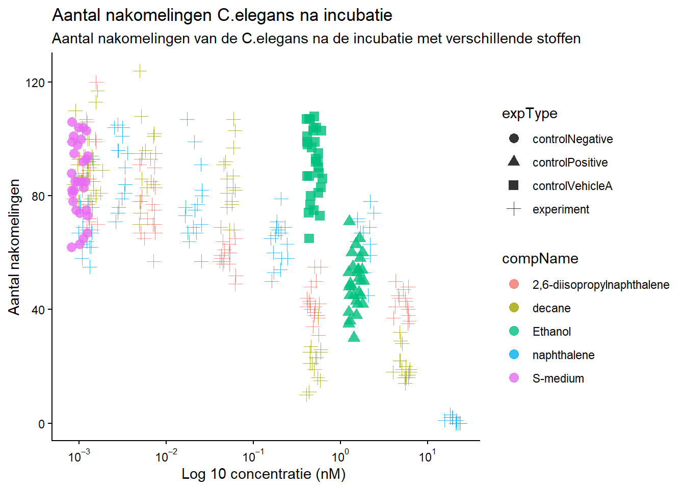
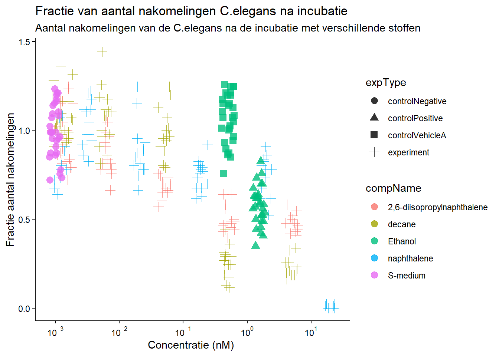

Chapter 5 Uitwerking vrije opdracht
Tijdens de cursus dsfb1 is er een RNA-sequancing analyse uitgevoerd. De data van die analyse wordt in deze opdracht gestructueerd volgens de Guerilla Analytics regels voor data management. Dit wordt gedaan door een afbeelding van de mapstructuur te laten zien en een screenshot van het bijbehorende README bestand.

Figure 5.1: fig x: Folder tree cursus dsfb1
Bij deze folder zit ook een algemeen README bestand en README bestanden voor de datasets. Hieronder komt een foto van het algemene README bestand.

Figure 5.2: Daur2 README
Naast dat de Guerilla Analytics regels werden gebruikt voor het data management van de cursus dsfb1 worden de regels ook gebruikt voor dit portfolio.
Foto folder structuur
Foto README
Voor wetenschap is het belangrijk dat experimenten reproduceerbaar zijn. Hieronder valt ook de data analyse. In dit gedeeldte van het portfolio wordt data van een uitgevoerd experiment geanalyseerd om te laten zien dat er reproduceerbaar gewerkt kan worden.
Het doel van het experiment was om te kijken welke stoffen invloed hebben op de nakomelingen van C. elegans Dit werd gedaan door de nematoden bloot te stellen aan verschillende concentraties van verschillende stoffen. Het aantal nakomelingen is geteld. De data uit dit experiment wordt geanalyseerd.
Het experiment is uitgevoerd door J. Louter (INT/ILC) en de data is afkomstig van het HU lectoraat Innovative Testing in Life Sciences & Chemistry.
De belangrijke variabelen in dit experiment zijn:
- “RawData”: de ruwe data
- “compName”: de naam van de stof
- “compConcentration”: de concentratie van de stof
De eerste stap is het inlezen van de data
Celegans_dataset <- read_excel(here::here("raw_data", "Data010", "CE.LIQ.FLOW.062_Tidydata.xlsx"), sheet = 1)Na het inlezen van de data wordt de data gecontroleerd op het type.
Er zijn een paar data type die veranderd moeten worden. De ruwe data is als double maar moet een integer worden aangezien het hele getallen zijn. De concentratie is als character weergeven maar moet als numeric omdat het decimalen heeft. Als laatst moet de naam van de stof worden veranderd naar een factor omdat het categorische data is.
#RawData veranderen van dbl naar int
Celegans_dataset$RawData <- as.integer(Celegans_dataset$RawData)
#compName veranderen van character naar factor
Celegans_dataset$compName <- as.factor(Celegans_dataset$compName)
#compConcentration veranderen van character naar numeric
Celegans_dataset$compConcentration <- as.numeric(Celegans_dataset$compConcentration)## Warning: NAs introduced by coercionNa het veranderen van de data wordt de data in een grafiek weergeven.
#Om ervoor te zorgen dat de dataset niet door 0 heen gaat voor de output van de grafiek
Celegans_dataset_no.na$compConcentration_offset <- Celegans_dataset_no.na$compConcentration + 0.001
#Plot met de aangepaste C.elegans data met het gebruik van geom jitter
Celegans_plot <- ggplot(data = Celegans_dataset_no.na, aes(x = compConcentration_offset, y = RawData)) +
geom_jitter(aes(color = compName, shape = expType), size = 3, alpha = 0.8, width = 0.1, height = 0) +
scale_x_log10(labels = label_log(digits = 2)) +
labs(title = "Aantal nakomelingen C.elegans na incubatie",
subtitle = "Aantal nakomelingen van de C.elegans na de incubatie met verschillende stoffen",
y = "Aantal nakomelingen",
x = "Log 10 concentratie (nM) ") +
theme_classic()
Celegans_plot## Warning: Removed 1 row containing missing values or values outside the scale range (`geom_point()`).
Normalisatie: Als laatste stap wordt de data genormaliseerd op een manier waardoor de negatieve controle gelijk is aan 1 en de rest wordt uitgedrukt als een fractie daarvan. Dit wordt gedaan zodat de data makkelijker kan worden vergeleken met de negatieve controle om een verschil te zien in de grafiek.
Eerst wordt de data veranderd zodat de negatieve controle gelijk is aan 1 en de ander data een fractie daarvan.
#Berekenen van het gemiddelde van de negatieve controle
Celegans_negative <- Celegans_dataset_no.na %>%
filter(expType == "controlNegative")
mean_control_negative <- mean(Celegans_negative$RawData)
#Gemiddelde van de negatieve controle is 85.9
Celegans_dataset_norm <- Celegans_dataset_no.na
#Zorg ervoor dat de data 1 is door alle waarden door het gemiddelde te delen
Celegans_dataset_norm$RawData <- (Celegans_dataset_norm$RawData / mean_control_negative)Daarna wordt er een grafiek gemaakt van de genormaliseerde dat (AI werd gebruikt om te helpen met de berekeningen om de data te normaliseren)
Celegans_dataset_norm$compConcentration_offset <- Celegans_dataset_norm$compConcentration + 0.001
Celegans_plot_normalized <- ggplot(data = Celegans_dataset_norm, aes(x = compConcentration_offset, y = RawData)) +
geom_jitter(aes(color = compName, shape = expType), size = 3, alpha = 0.8, width = 0.1, height = 0) +
scale_x_log10(labels = label_log(digits = 2)) +
labs(title = "Fractie van aantal nakomelingen C.elegans na incubatie",
subtitle = "Aantal nakomelingen van de C.elegans na de incubatie met verschillende stoffen",
y = "Fractie aantal nakomelingen",
x = "Concentratie (nM) ") +
theme_classic()
Celegans_plot_normalized## Warning: Removed 1 row containing missing values or values outside the scale range (`geom_point()`).
Er zijn verschillende controles aanwezig in het experiment.
Positieve controle: De positieve controle is de conditie waarbij er een positief resultaat wordt verwacht. In dit geval zal de controle wel een effect hebben op het aantal nakomelingen van de C.elegans
Negatieve controle: De negatieve controle is de conditie waarbij er een negatief resultaat wordt verwacht. In dit geval zal de negatieve controle geen effect hebben op het aantal nakomelingen van de C.elegans
Vehicle controle: De vehicle controle geeft aan of de substantie waarmee de getetste stoffen zijn opgelost invloed heeft op het experiment.
Uit de bovenstaande grafiek is te zien dat de positieve en vehicle controle voor het experiment Ethanol is en de negatieve controle S-medium. Dit kan ook gecheckt worden met de volgende code:
#Check wat de negatieve controle is voor het experiment
Celegans_dataset_no.na %>% filter(expType == "controlNegative") %>% select(compName, compConcentration) %>% slice(1)## # A tibble: 1 × 2
## compName compConcentration
## <fct> <dbl>
## 1 S-medium 0#Check wat de vehicle controle is voor het experiment
Celegans_dataset_no.na %>% filter(expType == "controlVehicleA") %>% select(compName, compConcentration) %>% slice(1)## # A tibble: 1 × 2
## compName compConcentration
## <fct> <dbl>
## 1 Ethanol 0.5#check wat de positieve controle is voor het experiment
Celegans_dataset_no.na %>% filter(expType == "controlPositive") %>% select(compName, compConcentration) %>% slice(1)## # A tibble: 1 × 2
## compName compConcentration
## <fct> <dbl>
## 1 Ethanol 1.5Stappenplan voor vervolgonderzoek
Als vervolg experiment zou een dosis response analyse uitgevoerd kunnen worden. Deze analyse kan worden uitgevoerd in R, waarbij de drc package gebruikt kan worden.
In dit gedeelte van het portfolio wordt er gekeken naar reproduceerbaarheid vanuit artikelen die online staan. Eerst wordt het artikel gelezen en wordt er een samenvatting over gemaakt.
5.1 Artikel informatie
Artikel: Small Intestine Bacterial Overgrowth is associated with increased Campylobacter and epithelial injury in duodenal biopsies of Bangladeshi children
Environmental enteric dysfonction (EED) is een asymptomatisch syndroom waarbij de dunne darm ontstoken raakt en niet meer effectief nutriënten kan opnemen, wat kan zorgen voor een negatieve impact op de groei en ontwikkeling van kinderen. Dit syndroom komt veel voor in lagen- en middeninkomtslanden, waarbij slechte hygiëne vaak aanwezig is. Het is gevonden dat een deel van de kinderen met EED small intestine bacterial overgrowth (SIBO) hebben, een dysbiose waarbij er teveel bacteriën in de dunne darm groeien. Het doel van dit onderzoek was om te bepalen of SIBO en EED een verband hadden in kinderen uit Bangladesh met als hypothese dat er een verband is en dat mucosa-adherende bacteriën significant zouden verschillen in SIBO positieve kinderen en SIBO negatieve kinderen.
De kinderen werden geselecteerd op bepaalde ciriteria, esophagogastroduodenoscopy werd uitgevoerd en bbiopsies van de twaalfvingerige darm werden genomen. Deze biopsies werden gelijk onderzocht onder de microscoop en daarna bewaard voor DNA extractie, gevolgd door 16srRNA gene sequencing. Voor de histlogische analyses werden de biopsies gefixeerd en werden de weefselcoupes beoordeeld volgens een index gerelateerd met de mate van ontsteking van de dunne darm. SIBO werd getest door glucose-hydrogen-breath testing (GHBT) en de samples werden geanalyseerd door gas chromatografie. De samples werden ingedeeld in SIBO positief of SIBO negatief. Statistische analyses werden uitgevoerd door te kijken naar non-parametische testen, alphaa- en bèta diversiteit.
Van de geteste kinderen hadden 12.7% SIBO, en er werd geen significan verschil gevonden tussen de histologische elementen tussen SIBO positieve en SIBO negatieve kinderen. Wat opviel was dat kinderen met SIBO een veel hogere abundantie hadden in Campylobacter dan kinderen zonder SIBO en dat verhoogde SIBO in verband stond met enterocytbeschadiging.
5.2 reproduceerbaarheid articel
In het tweede gedeelte wordt het artikel beoordeeld op repoduceerbaarheid waarbij er gekeken wordt naar verschillende beoordelingscriteria.
Over het algemeen is het artikel reproduceerbaar. Het doel is duidelijk weergeven aan het einde van de inleiding, er wordt aangegeven waar de data gevonden kan worden en dat alle data, metadata en code die gebruikt is in de studie gevonden kan worden. Er wordt aangegeven waar de studie is uitgevoerd en hoe de first author bereikt kan worden. Ook staat er een etische statement en een funding statement en is de code makkelijk te gebruiken. De algemene indruk is dus erg positief.
5.3 reproduceerbaarheid R code
Om te kijken of de code ook reproduceerbaar is voer ik de code van het artikel zelf uit om dezelfde resultaten te krijgen als de figuren. De data is te downloaden via een zip bestand. Wat me gelijk opviel was dat er geen README aanwezig was en het ook niet duidelijk was welk script voor welk doel gebruikt was. In de zip folder zat een R script, een Rmarkdown bestand, een R object en 5 datasets. Het R script was wat onduidelijk, maar het Rmarkdown bestand was makkelijk te lezen, aangezien er veel pseudocoding werd gebruikt om de verschillende stappen uit te leggen.
In het Rmarkdown bestand werden de verschillende analyses uitgevoerd. Nadat de data was ingeladen werden datasets samengevoegd en werden de verschillende taxa gefilterd. Daarna werden alpha en beta diversity analyses uitgevoerd om te kijken naar het verschil in SIBO positieve en SIBO negatieve kinderen. Alpha diversity werd gemeten met de Shannon index en de Wilcoxon test werd uitgevoerd om te kijken of er een singificant verschil is. Daarna werd er gekeken naar de beta diversity door een Principle Coordinates Analysis (PCoA) uit te voeren. Nadat er werd gekeken naar de significantie tussen de verschillende taxa met de de DESeq2 package in R. The area under the curve at 50% was calculated and split into two groups, low and high. Daarna werden verschillende. Daarna werden de histologische resultaten vergeleken met 16srRNA doormiddel van een PERMANOVA test, specifiek voor twee histologische parameters. Hierbij werden de alpha en beta diversity op dezelfde manier als eerder benoemd berekend. Als laatste in de anlayse werd de algemene microbiële compositie onderzocht. Hierbij werden de taxa op phylum level uitgeplot waarbij er naar de abudantie werd gekeken.
Tijdens het uitvoeren van het markdown bestand kwam ik tegen wat kleine dingen aan. Als eerst zou ik de packages installeren in de code, aangezien dit nu handmatig gedaan moest worden. Daarnaast stonden de datasets in de code in een ander format dan in de folder. Ook kwamen sommige pathways met het inlezen van de data niet overeen met de folderstructuur. Dit zijn dingen die je makkelijk zelf kan aanpassen, wat wel zorgt voor een mindere reproduceerbaarheid. Wat heel fijn was aan dit Rmarkdown bestand was dat als eenmaal alles goed staat de code werkte. De grafieken die uit de bestanden kwamen, waren echter anders dan de grafieken die in het artikel staan, zie figuur x. Daarnaast waren er datasets in de folder, alleen stond er geen duidelijke uitleg bij wat welke dataset inhield.
Op een schaal van 1 tot 5 geef ik de reproduceerbaarheid van de R code een 3, aangezien niet alles duidelijk is weergeven, maar er wel pseudocoding met uitleg staat. Om op deze manier te kijken naar een artikel besef je zelf hoe lastig het is om goed reproduceerbaar te werken, wat goed inicht geeft.
R packages zijn functies die makkelijk opgeroepen en gebruikt kunnen worden. In deze opdracht wordt er zelf een R package gemaakt. In de package zitten 4 fucnties en een dataset. De functies zijn simepele R functies, zoals het veranderen van het datatype van een kolom.
De package heet portfunctions (portfolio functions) en is te installeren door de volgende code:
de package heeft meerdere functies met code die in de bestanden van dit portfolio staan. Korte uitleg over de functies (staat ook in de vignette):
Datatype: Veranderd een kolom van een dataset naar het gewenste datatype.
RemoveNA: Verwijderd NA waarden uit een kolom en zorgt ervoor dat de rijen met die waarden ook verwijderd worden.
NotZero: Zorgt ervoor bij het maken van een grafiek dat de waarden niet door 0 gaan.
ChangeColname: Verandert de kolomnaam naar een nieuwe naam.
Dataset in de package: LandBird_Monitoring Link naar dataset
De vignette kan bekeken worden door de volgende code: